La maison
https://www.airbnb.fr/rooms/5009565
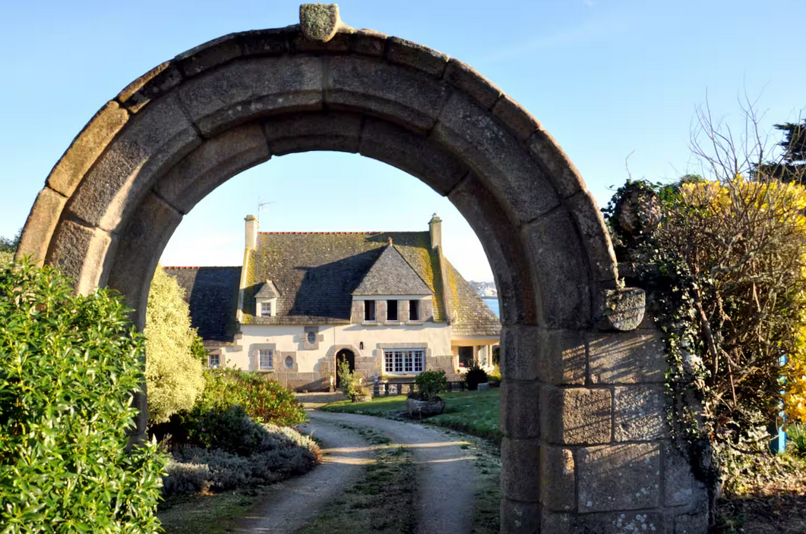
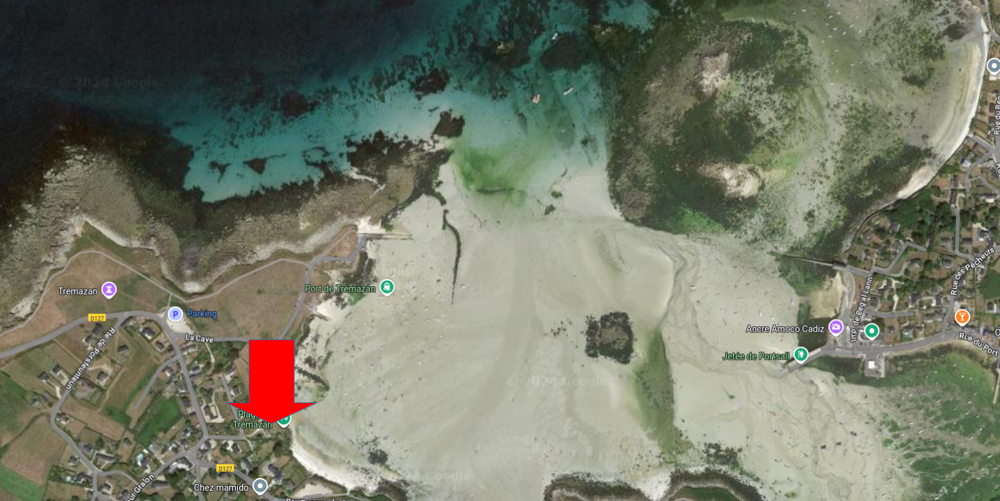
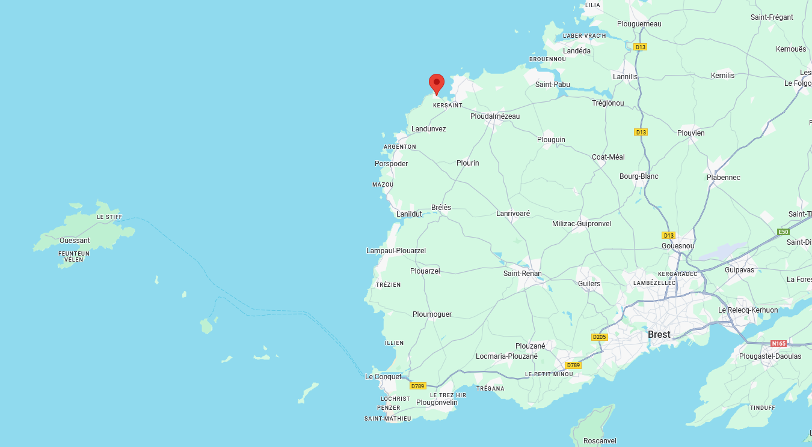
Adresse : 2
Impasse de la Cave, 29840 Landunvez
Coût :
- maison : 2711€59
- draps + linge de toilette : ???
- ménage : ???
Liaison avec Brest TGV 🚆
- 914
🚌 Brest (gare routière SNCF) 11:55 - 12:59 Ploudamezeau (Bar Al
Lan)
- 912
🚌 Brest (gare routière SNCF) 12:09 - 12:40 Saint Renan (gare
routière) - 13:12 Ploudamezeau (Bar Al Lan)
- 912
🚌 Brest (gare routière SNCF) 16:09 - 16:40 Saint Renan (gare
routière) - 17:12 Ploudamezeau (Bar Al Lan)
- 914
🚌 Brest (gare routière SNCF) 17:00 - 18:04 Ploudamezeau (Bar Al
Lan)
- 914
🚌 Brest (gare routière SNCF) 18:15 - 19:19 Ploudamezeau (Bar Al
Lan)
- 912
🚌 Brest (gare routière SNCF) 19:15 - 19:46 Saint Renan (gare
routière) - 20:15 Ploudamezeau (Bar Al Lan)
🥾 00:30 jusqu’à la maison
La carte du séjour
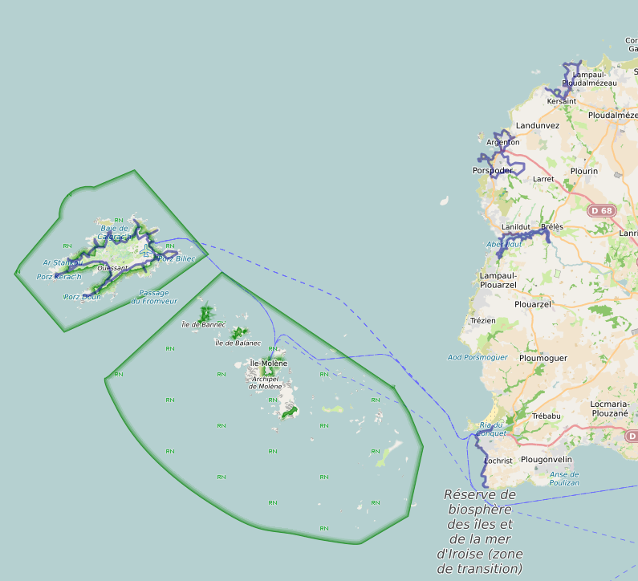
L’ile Carn : dimanche
13 juillet 🥾 12
km, D+160
📍 la maison, 09:30. L’île est accessible uniquement à marée basse
par coefficient d’au moins 80. Marée basse à 14:11. Voir les horaires de marée.
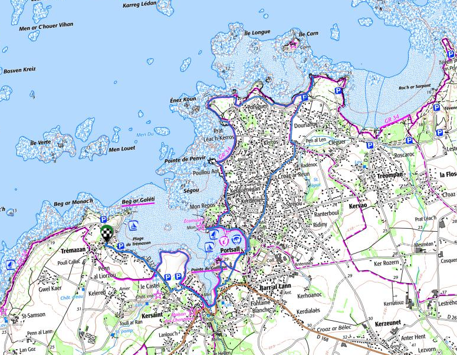
📍 parking route
du Crapaud : 🚗 00:20, 15 km
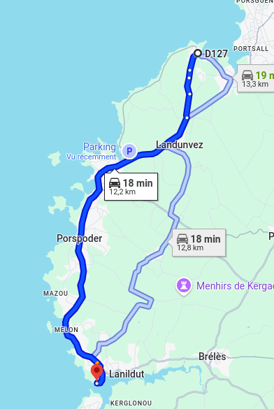
Horaires du passeur
: 09:30 - 11:30 et 14:30 - 17:00, tous les jours. Appeler la
Capitainerie la veille (06.31.93.58.71)
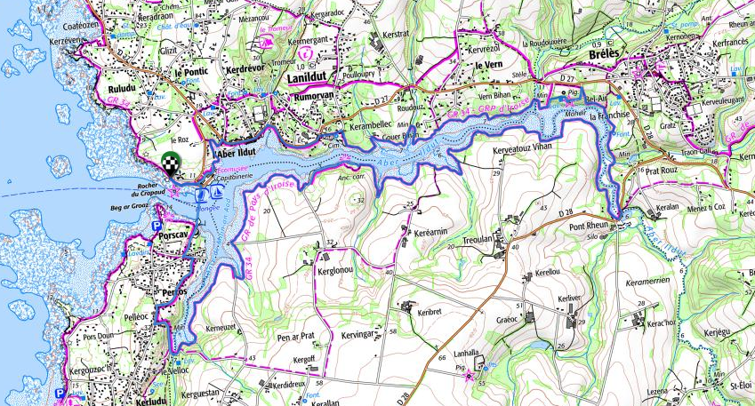
📍 parking route
du Crapaud : 🚗 00:20, 15 km
Traversée ⛵ 00:45, 37€00
Réservation
- Lanildut 09:30 - 10:20 Ouessant
- Ouessant 17:15 - 18:05 Lanildut
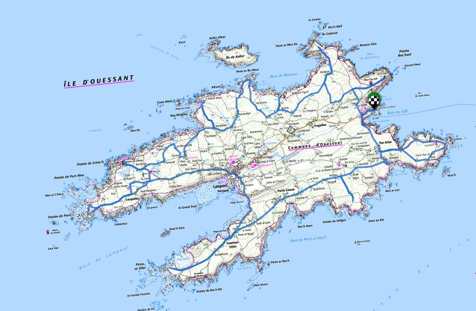
Location vélo 🚲 à la journée :
Coût :
- 14€00, VTT/VTC
- 30€00, vélo électrique
Loueurs :
- Cycle Évasion : 02.98.48.85.15
- La Bicyclette : 06.80.70.94.95
- Ouessancycles : 02.98.48.83.44 ou 06.81.89.11.41
A voir :
- ⛪ L’église Saint Pol-Aurélien
- ⛪ Le musée des phares et balises
- ⛪ Le phare du Creac’h
- 🌊 La pointe de Kadoran
- 🌊 La pointe de Porz Doun
- 🌊 Le port d’Arlan
- 🌊 La pointe de Pern
Du Conquet à la
Pointe Saint Mathieu 🥾 12
km, D+50
📍Passerelle du
Croaë : 🚗 00:31, 27 km
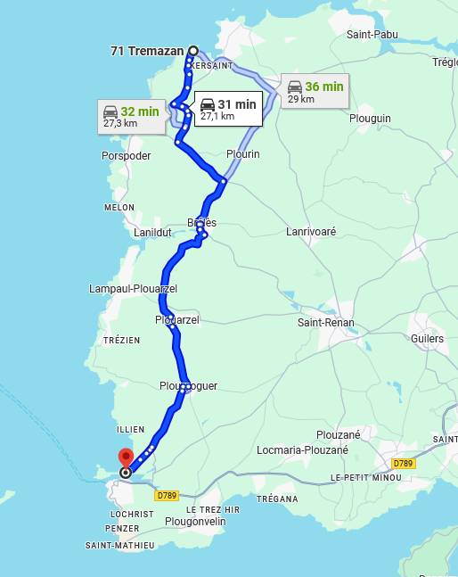
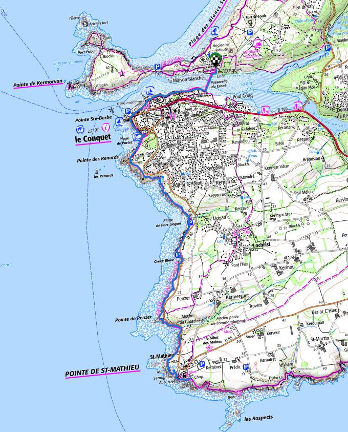
📍parking plage
du Penfoul : 🚗 00:05, 4 km
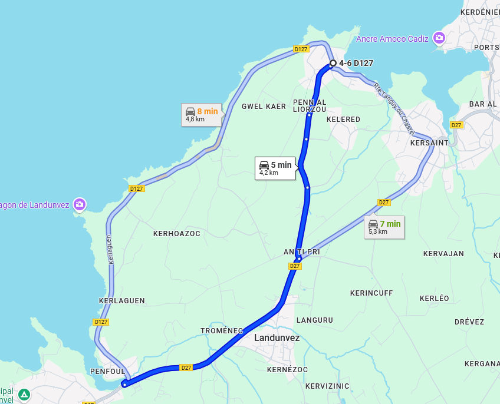
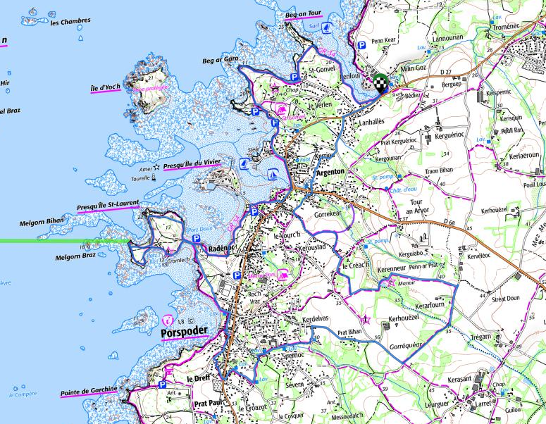
Journées light
Les marées
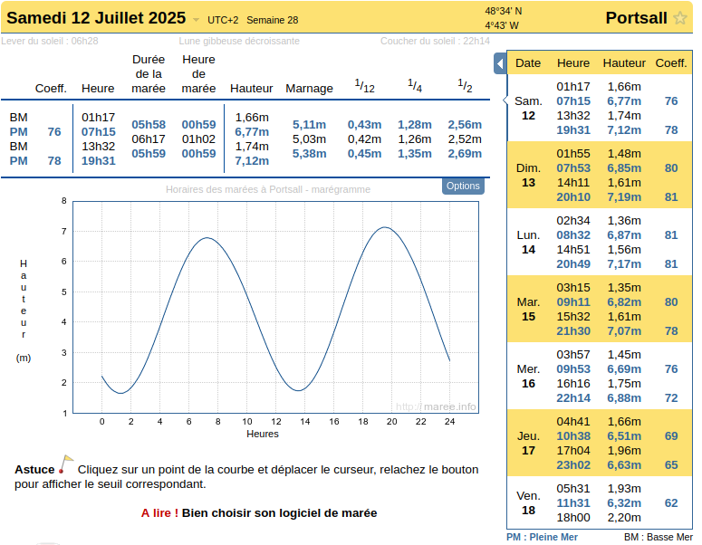